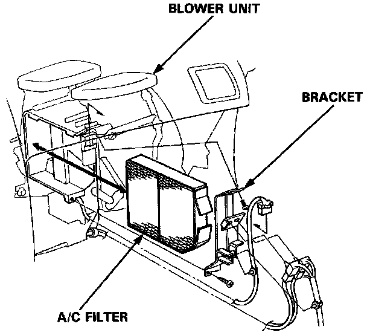

Cabin Air Filter / Purifier: Service and Repair
A/C FILTER REPLACEMENT1. Remove the glove box and glove box frame. Service and Repair

2. Remove the screws and bracket then remove the A/C filter.
- Replace the A/C filter every 15,000 miles (24,000 km) or 12 months whichever comes first.
- Install the A/C filter in the reverse order of removal, then doesn't leak any air.